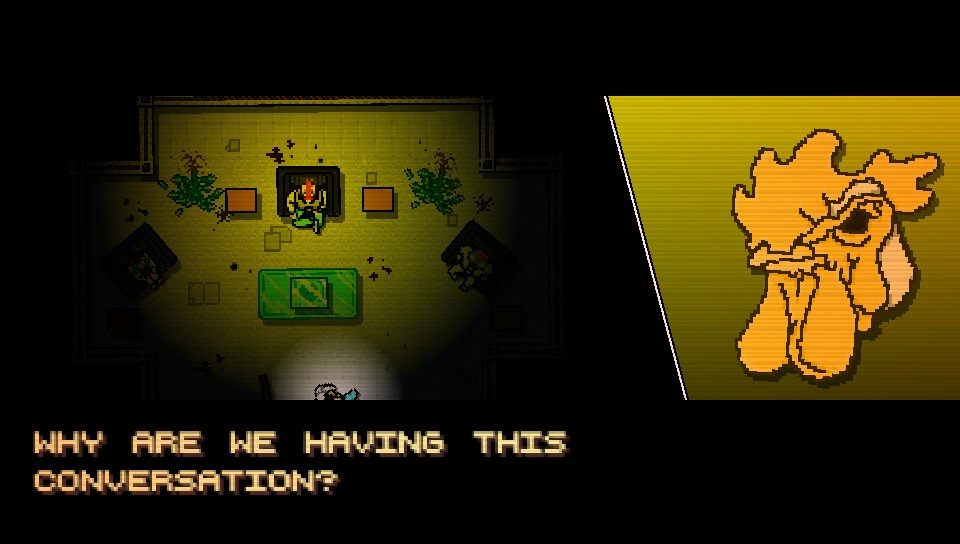

Recuerdo como si fuera ayer jugar a Hotline Miami y que mientras que tu personaje esta en un sueño febril otro que tiene una mascara de gallo te lo pregunta. Te lo preguntan en un juego que dista mucho de ser reservado con la violencia y, no contento con ello, te hace reflexionar sobre eso, sobre si por el mero hecho de divertirte con un juego que se basa en violencia que además parece no tener propósito te hace una persona violenta. O es solo una mecánica mas en pos del entretenimiento.
"Question number one: Do you like hurting other people?
Question number two: Who is leaving messages on your answering machine?
Question number three: Where are you right now"
Es fácil detener la violencia en un videojuego, solo tienes que cerrarlo, entonces ¿Cuál es la razón de que no cierres el juego si no es que eres una persona que disfruta de la violencia?> Es un dilema de muchos jugadores y que no solo es exclusivo de este medio como hizo patente Michael Haneke en su película Funny Games.
Este juego exponía la violencia de tal manera que fue prohibido en Australia. Pero este trabajo no es un análisis de Hotline Miami, solo me sirve para exponer la pregunta sobre el rol de la violencia en los videojuegos, sobre si estos nos hacen mas violentos a los jugadores, si hay alguna correlación. Pues, es un dilema importante para la opinión publica que los videojuegos tienen con el resto del mundo, todos hemos oído supuestas correlaciones, a menudo rebuscadas, entre delitos mayores y el uso de los productos interactivos, pero ¿Existe de verdad esta correlación? ¿O es solo una selección sesgada de los muchos casos de delitos violentos que, tristemente, se dan en nuestro planeta?
Políticos y expertos llevan años haciéndose esa pregunta y, aunque todo el mundo cree conocer la respuesta, los estudios científicos aún no han arrojado resultados que satisfagan ni siquiera el sondeo más básico. En 2015, el sitio web de videojuegos Polygon informaba de un estudio de la Asociación Psicológica Estadounidense (APA) que concluía que existe una relación entre los juegos violentos y la agresividad. "La investigación demuestra una relación consistente entre el uso de videojuegos violentos y el aumento del comportamiento agresivo, las cogniciones y el afecto agresivos, y la disminución del comportamiento prosocial, la empatía y la sensibilidad a la agresión", decía el informe.
Pero una mirada más atenta al estudio de la APA (pdf) lleva a una serie de preguntas, muchas de las mismas preguntas que Kotaku se hizo en enero de 2013, cuando realizaron un extenso análisis del estado actual de la investigación sobre la violencia en los videojuegos.
Un poco de contexto: el estudio de la APA, que se publicó en 2015, no se basa en nuevas investigaciones, sino que es una revisión de los estudios realizados entre 2005 y 2013. Además de examinar varias revistas individuales, los investigadores de la APA analizaron cuatro metaanálisis y, en última instancia, llegaron a la conclusión de que, efectivamente, existe un patrón de sujetos de prueba que se vuelven más agresivos después de jugar a videojuegos violentos. Aunque estos informes presentan una serie de problemas, entre ellos los métodos de medición de la agresividad que se usan, el solo prestar atención a los efectos a corto plazo en vez de a largo plazo y el hecho de que, según un estudio realizado por la universidad de Brock en 2013, realmente la competición es un factor mas importante que la propia violencia. Además, según el propio informe, no hay pruebas suficientes de una posible relación entre jugar a juegos violentos y cometer actos de violencia delictiva, ya que existe una "investigación muy limitada" sobre este tema.
 Políticos y expertos llevan años haciéndose esa pregunta y, aunque todo el mundo cree conocer la respuesta, los estudios científicos aún no han arrojado resultados que satisfagan ni siquiera el sondeo más básico. En 2015, el sitio web de videojuegos Polygon informaba de un estudio de la Asociación Psicológica Estadounidense (APA) que concluía que existe una relación entre los juegos violentos y la agresividad. "La investigación demuestra una relación consistente entre el uso de videojuegos violentos y el aumento del comportamiento agresivo, las cogniciones y el afecto agresivos, y la disminución del comportamiento prosocial, la empatía y la sensibilidad a la agresión", decía el informe.
Políticos y expertos llevan años haciéndose esa pregunta y, aunque todo el mundo cree conocer la respuesta, los estudios científicos aún no han arrojado resultados que satisfagan ni siquiera el sondeo más básico. En 2015, el sitio web de videojuegos Polygon informaba de un estudio de la Asociación Psicológica Estadounidense (APA) que concluía que existe una relación entre los juegos violentos y la agresividad. "La investigación demuestra una relación consistente entre el uso de videojuegos violentos y el aumento del comportamiento agresivo, las cogniciones y el afecto agresivos, y la disminución del comportamiento prosocial, la empatía y la sensibilidad a la agresión", decía el informe.